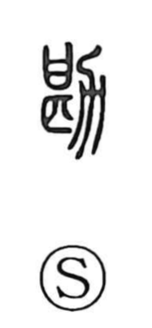

勘

Kun: kangaeru, shiraberu | On: kan
intuition ・ to check ・ to consider
Explanation
Shirakawa understands 勘 as a compound of 甚 and 力. Here 力 is not “strength,” but the form of a plow (耒), and the whole graph evokes the act of rubbing or sharpening the plow against a block—the kind of solid, resonant implement also associated with 甚, as in the fulling block 碪. From this image of careful grinding and adjustment came the sense of deliberate examination: to check and weigh matters, and by extension to think and consider. In this vein, the character also expresses the work of collating and testing a text to judge whether a character or phrasing is correct.